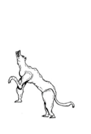
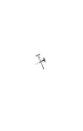

Dried Up Worms
2023
Small magazines, 5 by 3 ¼ in
“Dried Up Worms” is a zine that explores beauty and simplicity. It features poems and illustrations from my journal. I designed this zine to compliment my art. The blue frames add some elegant color and texture to the the poem pages. Bruce Rogers’ work was an inspiration while creating this. Bruce Rodgers is a pioneer in book design.




